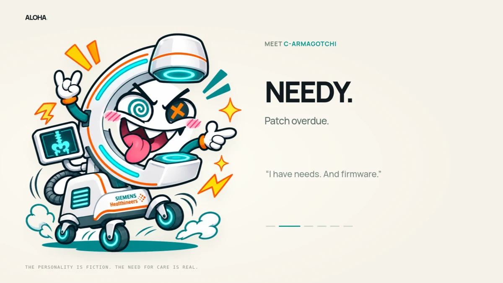
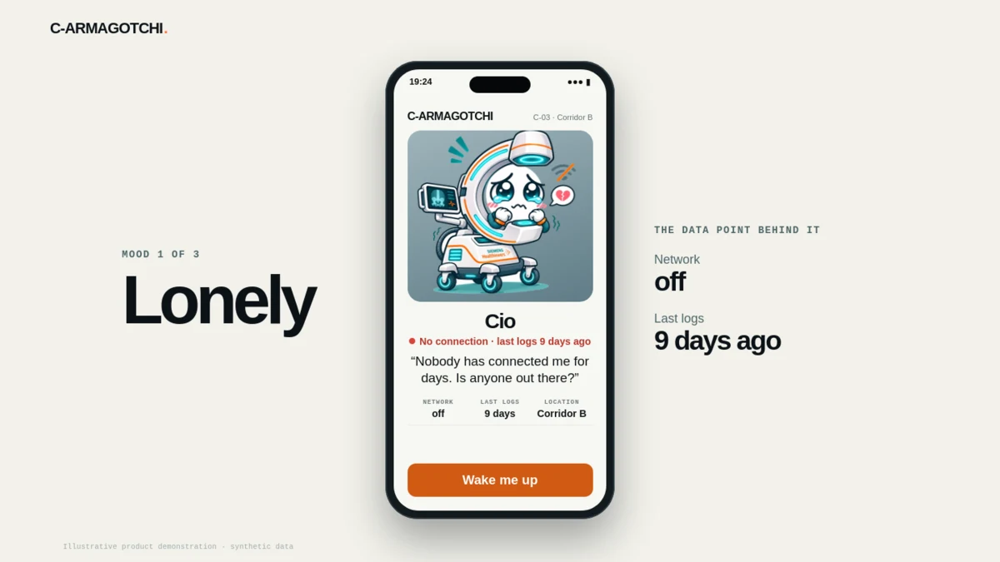
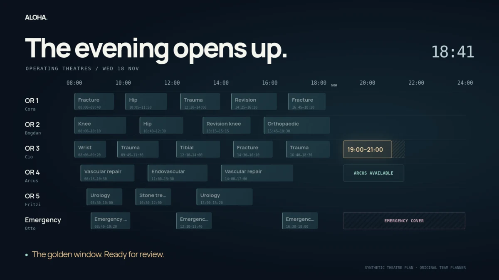
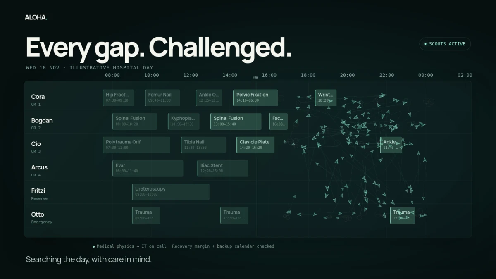
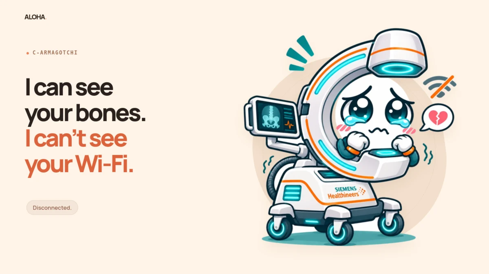
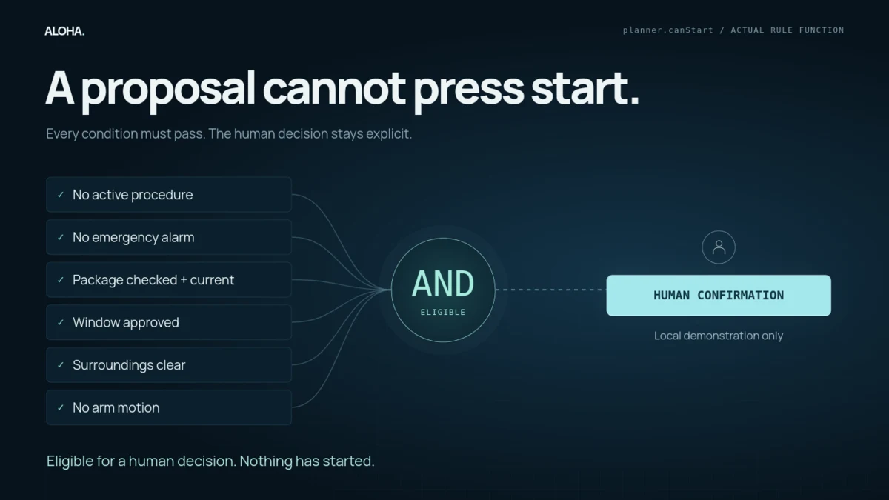

OPEN PRESENTATION ↗

OPEN PRESENTATION ↗VERSION 02 · 3 MINUTES
In Good Hands
Christian’s product story, performed through his actual phone, planning and robot-mission template.


OPEN PRESENTATION ↗VERSION 03 · 3 MINUTES
Night Shift
A cinematic evening in the hospital. A golden thread turns an opportunity into a completed handoff.


OPEN PRESENTATION ↗VERSION 04 · 3 MINUTES
Constellation
The ultra-animated cut: a dimensional character reveal, a coordinated swarm and a living service architecture.


OPEN PRESENTATION ↗VERSION 05 · 3 MINUTES
Attachment Issues
The comedy cut. An emotionally demanding C-arm, a calendar full of bad dates, and a surprisingly grown-up solution.


OPEN PRESENTATION ↗VERSION 06 · 3 MINUTES
Open Circuit
The engineering cut. Executable rules, a live start gate, and the proposed hospital stack—made visible.